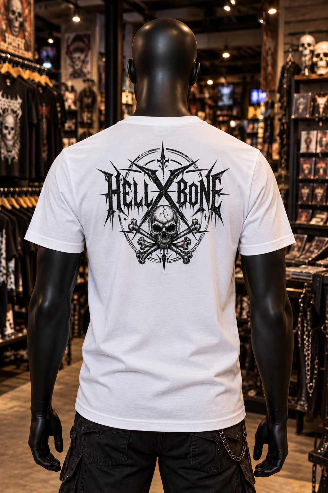

La boutique HELLXBONE est de retour ! 🤘
Après un petit ménage de printemps, je rouvre les portes de ma boutique en ligne. Les créations HELLXBONE reprennent du service !

La boutique HELLXBONE est de nouveau ouverte ! Après un petit ménage de printemps, j’ai remis de l’ordre pour te faire retrouver mes créations dans ma boutique en ligne.
Du rock, du metal et des visuels qui ont du caractère : je crée chaque dessin moi-même, avec l’envie de faire vivre mon univers sur tes tee-shirts.
Derrière HELLXBONE, il y a aussi ma démarche avec l’association DIYOTHE : combattre la maladie et l’isolement social grâce à la création artistique.
Viens faire un tour dans la boutique et partage la nouvelle autour de toi. Merci pour ton soutien, ça m’aide à continuer à créer ! 🤘
🤘 Ouvrir dans l’application HELLXBONESuivre HELLXBONE sur Facebook